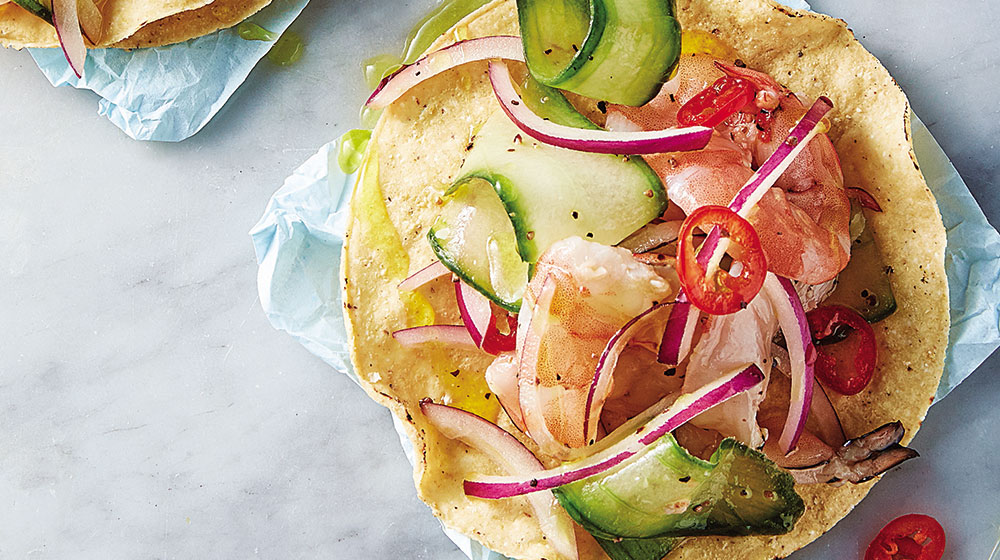

¿Cuántos tacos de suadero puedes comer? Si eres de los que pierden la cuenta después de probar el quinto taquito, te recomendamos prepararlos en casa.

Aguachile
Consiente a tu paladar con esta suculenta comida y transforma tu hora de comida en algo maravilloso.
Sigue la receta de chiles rellenos de queso. Algunos dicen que prepararlos tiene un grado de dificultad, ¿tú qué opinas? Anímate a cocinarlos siguiendo nuestros pasos y dinos si para ti resultó ser un reto.
regresar a la pagina principal